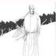

元曲代表人物---元曲四大家
关汉卿
关汉卿（约1220年──1300年），元代杂剧作家。是中国古代戏曲创作的代表人物，“元曲四大家”之首。号已斋（一作一斋）、已斋叟。汉族，解州人（今山西省运城），与马致远、郑光祖、白朴并称为“元曲四大家”。以杂剧的成就最大，一生写了60多种，今存18种，最著名的有《窦娥冤》；关汉卿也写了不少历史剧，如：《单刀会》、《单鞭夺槊》、《西蜀梦》等；散曲今在小令40多首、套数10多首。关汉卿塑造的“我却是蒸不烂、煮不熟、捶不匾、炒不爆、响珰珰一粒铜豌豆”（〈不伏老〉）的形象也广为人称，被誉“曲家圣人”。
马致远
马致远（约1250－约1321以后），字千里，号东篱，（一说名不详，字致远，晚号“东篱”），汉族，元代戏曲作家，元大都（今北京）人，原籍河北省东光县马祠堂村。与关汉卿、郑光祖、白朴并称“元曲四大家。”
马致远是元代著名杂剧作家，大都（现今北京）人。因《天净沙·秋思》而被称为秋思之祖。所作杂剧今知有15种，《汉宫秋》是其代表作；散曲120多首，有辑本《东篱乐府》。
郑光祖
郑光祖生于元世祖至元初年（即公元1264年）[1] ，字德辉，汉族，元代著名的杂剧家和散曲家，平阳襄陵（今山西临汾市襄汾县）人。
郑光祖从小就受到戏剧艺术的熏陶，青年时期置身于杂剧活动，享有盛誉。但他的主要活动在南方（杭州），成为南方戏剧圈中的巨擘。所作杂剧在当时“名闻天下，声振闺阁”。元·周德清在《中原音韵》中激赏郑光祖的文词，将他与关汉卿、马致远、白朴并列，后人合称为“元曲四大家”。
白朴

白朴（1226－约1306）， 原名恒，字仁甫，后改名朴，字太素，号兰谷。汉族，祖籍隩州（今山西河曲），后徙居真定（今河北正定县），晚岁寓居金陵（今南京市），终身未仕。他是元代著名的杂剧作家，与关汉卿、马致远、郑光祖并称为元曲四大作家。代表作主要有《唐明皇秋夜梧桐雨》、《裴少俊墙头马上》、《董秀英花月东墙记》等。